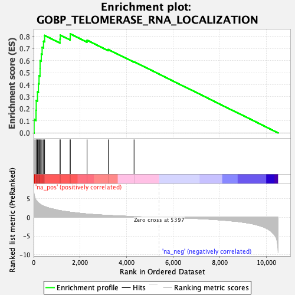
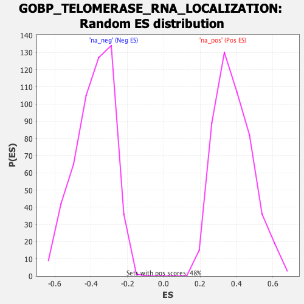

| Dataset | qlf.KOd4vsWTd4_gsea_score |
| Phenotype | NoPhenotypeAvailable |
| Upregulated in class | na_pos |
| GeneSet | GOBP_TELOMERASE_RNA_LOCALIZATION |
| Enrichment Score (ES) | 0.8215103 |
| Normalized Enrichment Score (NES) | 2.1410396 |
| Nominal p-value | 0.0 |
| FDR q-value | 1.4054567E-5 |
| FWER p-Value | 0.001 |

| SYMBOL | RANK IN GENE LIST | RANK METRIC SCORE | RUNNING ES | CORE ENRICHMENT | |
|---|---|---|---|---|---|
| 1 | NHP2 | 20 | 6.137 | 0.1108 | Yes |
| 2 | CCT4 | 103 | 4.571 | 0.1870 | Yes |
| 3 | DKC1 | 112 | 4.505 | 0.2690 | Yes |
| 4 | CCT3 | 166 | 4.142 | 0.3400 | Yes |
| 5 | CCT6A | 207 | 3.906 | 0.4079 | Yes |
| 6 | CCT5 | 233 | 3.745 | 0.4743 | Yes |
| 7 | CCT8 | 276 | 3.504 | 0.5347 | Yes |
| 8 | RUVBL2 | 278 | 3.501 | 0.5989 | Yes |
| 9 | RUVBL1 | 329 | 3.301 | 0.6548 | Yes |
| 10 | NAF1 | 365 | 3.202 | 0.7103 | Yes |
| 11 | TCP1 | 425 | 3.009 | 0.7599 | Yes |
| 12 | CCT7 | 472 | 2.904 | 0.8089 | Yes |
| 13 | SHQ1 | 1135 | 1.797 | 0.7788 | Yes |
| 14 | CCT2 | 1144 | 1.790 | 0.8109 | Yes |
| 15 | DCP2 | 1572 | 1.397 | 0.7959 | Yes |
| 16 | NOP10 | 1573 | 1.397 | 0.8215 | Yes |
| 17 | EXOSC10 | 2297 | 0.896 | 0.7690 | No |
| 18 | PARN | 3209 | 0.521 | 0.6918 | No |
| 19 | WRAP53 | 4318 | 0.214 | 0.5901 | No |
